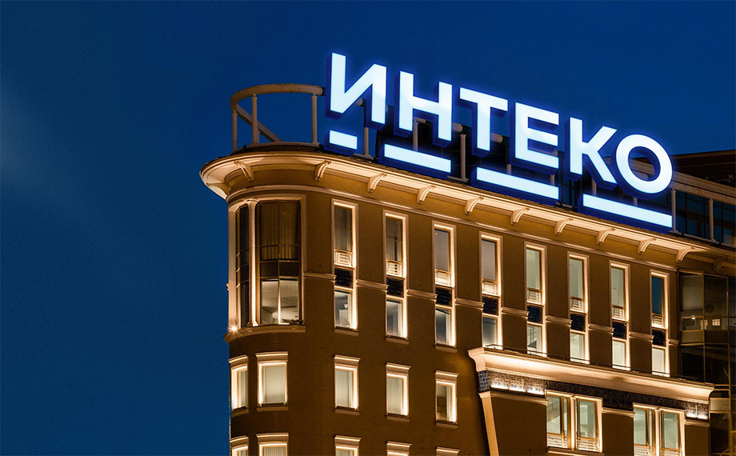

Страница о компании Интеко
Кто мы
«ИНТЕКО» – прогрессивный девелопер с государственным участием. Компания активно участвует в развитии городов: возводит современные жилые комплексы и социально значимые объекты, создает комфортные общественные пространства, формируя новые точки притяжения и современную среду для комфортной жизни. Компания включена в перечень системообразующих организаций строительной отрасли. Президент компании – Александр Николаев является членом Общественного совета при Минстрое РФ.
Наши проекты
За 19 лет на рынке недвижимости компания реализовала более 80 проектов в Москве, Ростове-на-Дону, Санкт-Петербурге и Ленинградской области и построила более 5 млн кв. м.
Среди знаковых проектов:
Легендарный элитный комплекс в Хамовниках «Садовые кварталы», ЖК бизнес-класса «West Garden», ЖК комфорт-класса «Вестердам», ЖК «Шуваловский», ЖК «DOMINION», ЖК «Гранд-паркъ», Здания МГУ имени М. В. Ломоносова, Авторский дом премиум-класса на Врубеля, 4, Элитный комплекс апартаментов Balchug Residence, элитный комплекс апарт-резиденций Balchug Viewpoint.
Из года в год проекты «ИНТЕКО» побеждают в престижных российских и международных отраслевых премиях, что подтверждает признание профессионального сообщества и любовь наших клиентов. Компания стала обладателям уже более 35 наград и продолжает запускать новые яркие проекты на рынке недвижимости.